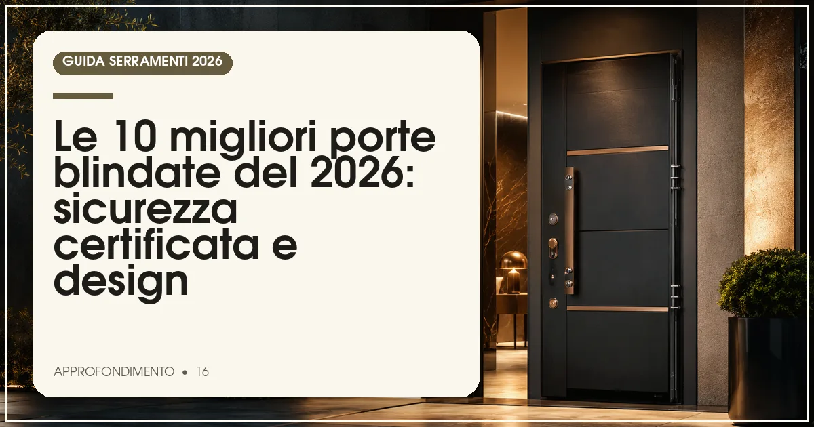

La migliore porta blindata del 2026 è Dierre Sentry 1 in classe antieffrazione 3: lamiera doppia, serratura a cilindro europeo con defender e pannellatura di design. Per il top assoluto in classe 4, il riferimento è Oikos Tekno. Prezzi: da 1.200 a oltre 4.000 euro, posa esclusa.
In sintesi
- La norma UNI EN 1627 classifica anche le porte: per un appartamento serve la classe 3, per ville isolate la classe 4.
- Il cilindro europeo ad alta sicurezza con defender è oggi lo standard minimo; le serrature motorizzate stanno diventando la norma nel premium.
- Una buona blindata moderna isola anche termicamente (Ud fino a 0,9-1,2 W/m²K) e acusticamente (38-45 dB).
- Prezzi 2026: da circa 1.200 euro (classe 3 base) a oltre 4.000-6.000 euro per classe 4 e design su misura.
- Posa e ancoraggio al muro contano quanto la porta: pretendete fissaggi certificati.
Nel 60-70% dei furti in abitazione il punto di ingresso è la porta principale: scassinare una vecchia porta con serratura a doppia mappa richiede meno di un minuto, mentre una blindata moderna in classe 3 resiste almeno 5 minuti all'attacco con piede di porco e trapano. Ma la porta d'ingresso del 2026 non è solo sicurezza: è tenuta termica (spesso è il punto più freddo dell'appartamento), abbattimento acustico del pianerottolo e, sempre più, un pezzo di design.
Il riferimento tecnico resta la norma UNI EN 1627, che per le porte pedonali definisce le classi antieffrazione da 1 a 6. Per il residenziale in condominio la classe consigliata è la 3; la 4 è lo standard per ville e case isolate. Accanto alla classe, valutate serratura (cilindro europeo con defender, meglio se motorizzata), trasmittanza Ud, abbattimento acustico e qualità dei pannelli.
Per questa Top 10 abbiamo incrociato certificazioni, dotazioni di serie e prezzi rilevati presso rivenditori e showroom a luglio 2026. Se state mettendo in sicurezza tutta la casa, completate il quadro con la nostra Top 10 delle finestre antieffrazione: porta e finestre devono ragionare sullo stesso livello di protezione.
La classifica: le 10 porte blindate del 2026
Dierre Sentry — il riferimento italiano della sicurezza
Il marchio torinese è sinonimo di porta blindata in Italia da quarant'anni, e la gamma Sentry resta il benchmark: classe antieffrazione 3 (con versioni in classe 4), doppia lamiera, serratura a cilindro europeo con defender antistrappo e chiusura multipunto, abbattimento acustico fino a 40-42 dB. Le pannellature spaziano dal laminato alle essenze pregiate, con soluzioni a scomparsa e filo muro.
Prezzi indicativi 1.500-3.500 euro a seconda di classe e finitura, posa esclusa. La rete di assistenza Dierre, tra le più capillari, è un valore quando servono duplicati di chiavi protette o manutenzione della serratura.
- Classe 3 e 4 certificate
- Rete assistenza capillare in Italia
- Ampia scelta di pannelli e finiture
- Design più classico sulle serie base
- Listino medio-alto sulle versioni top
Oikos Tekno — il lusso invisibile della classe 4
Il marchio veneto ha trasformato la blindata in oggetto di architettura: Tekno è una porta a filo muro senza cerniere a vista, in classe antieffrazione 4, con serratura motorizzata e apertura anche tramite badge, impronta o smartphone. Le superfici arrivano a lastre di gres, cemento o legno continue con la parete: la porta scompare, la sicurezza resta.
Prezzi nella fascia alta: indicativamente 3.000-6.000 euro e oltre per le versioni su misura. È la scelta delle ville di pregio e degli studi di architettura che vogliono la classe 4 senza cedimenti estetici.
- Classe 4 con design filo muro
- Serratura motorizzata e apertura smart
- Finiture architettoniche su misura
- Prezzo molto alto
- Richiede posatori specializzati
Vighi — la sicurezza su misura dal 1965
Storico marchio umbro, Vighi produce blindate interamente in Italia con un'attenzione artigianale alla personalizzazione: classe 3 e 4, serrature a cilindro europeo con possibilità di doppia serratura combinata, pannelli lisci, pantografati o in essenza, e una delle gamme vetrate di sicurezza più ampie (modelli con vetri antieffrazione P6B).
Prezzi indicativi 1.400-3.200 euro. Punto di forza: la capacità di realizzare misure fuori standard e pannellature coordinate con le porte interne, utile nelle ristrutturazioni complete.
- Produzione italiana su misura
- Gamma con vetri di sicurezza ampia
- Ottimo rapporto qualità-prezzo nella fascia media
- Rete meno capillare di Dierre
- Tempi più lunghi per i fuori standard
Bauxt — il made in Italy tecnico in classe 4
L'azienda friulana è tra le più orientate all'innovazione: porte in classe 3 e 4 con taglio termico, cerniere a scomparsa regolabili su tre assi e serrature elettroniche integrate. La gamma Zen unisce anta complanare e pannelli moderni, con abbattimenti acustici fino a 43 dB: tra i migliori della classifica.
Prezzi indicativi 1.800-4.000 euro. Molto apprezzata dai posatori per la qualità del telaio e dei sistemi di ancoraggio, che semplificano una messa in opera a regola d'arte.
- Classe 4 con taglio termico
- Acustica fino a 43 dB
- Cerniere a scomparsa regolabili
- Prezzo medio-alto
- Meno nota al grande pubblico
Gardesa — il gigante italiano del rapporto qualità-prezzo
Tra i maggiori produttori europei di porte blindate, Gardesa punta su industrializzazione e prezzo: porte in classe 3 con cilindro europeo e defender già nella configurazione base, pannelli dal classico al moderno e un catalogo vastissimo. La qualità costruttiva è solida e costante, tipica della grande produzione di serie.
Prezzi indicativi 1.200-2.500 euro: il punto di ingresso più equilibrato della classifica per chi vuole una classe 3 certificata senza sforare il budget.
- Prezzo competitivo per la classe 3
- Catalogo molto ampio
- Disponibilità rapida su misure standard
- Personalizzazioni più limitate
- Finiture base meno raffinate
Torterolo & Re — eleganza piemontese in classe 3 e 4
Il marchio di Castellazzo Bormida unisce tradizione e linee contemporanee: blindate in classe 3 e 4 con pannelli lisci laccati o in legno, ottime prestazioni acustiche e una cura particolare per i contesti condominiali di pregio. Prezzi indicativi 1.600-3.500 euro; apprezzata la possibilità di coordinare porta blindata e porte interne della stessa collezione.
Alias — la blindata degli architetti
Alias, con sede in Toscana, è il marchio che più ha spinto la blindata verso il design minimale: superfici continue, maniglie integrate, finiture materiche e versioni filo muro, con classi 3 e 4 certificate e serrature elettroniche. Prezzi indicativi 2.200-5.000 euro: è la via di mezzo tra l'industriale e il sartoriale, molto specificata negli appartamenti di ristrutturazione di pregio.
Fichet — la sicurezza francese di tradizione bancaria
Storico marchio transalpino nato nella sicurezza di banche e caveau, Fichet porta nel residenziale porte in classe 3 e 4 con serrature brevettate e cilindri ad altissima protezione. Il design è più sobrio che spettacolare, ma la sostanza antieffrazione è ai vertici. Prezzi indicativi 1.800-3.800 euro; in Italia la distribuzione passa da rivenditori selezionati.
Silvelox — la porta garage che fa anche ingresso blindato
Conosciuta per le porte da garage, Silvelox ha nella gamma Securlap e nelle blindate pedonali prodotti in classe 3 e 4 con un'attenzione particolare all'isolamento termico, utile quando l'ingresso confina con ambienti non riscaldati. Prezzi indicativi 1.500-3.000 euro. Interessante per villette a schiera e case con garage comunicante.
Dibi — la classe 3 accessibile made in Italy
Chiude la classifica Dibi, produttore italiano con un catalogo orientato al primo prezzo di qualità: porte in classe 3 con cilindro europeo e pannelli moderni a partire da circa 1.000-1.800 euro indicativi. La scelta giusta per appartamenti in condominio e immobili a reddito, dove serve la certificazione senza extras costosi.
Tabella comparativa: classe, serratura e prezzi delle 10 blindate
| Marchio | Classe | Serratura | Prezzo indicativo (€) | Punto di forza |
|---|---|---|---|---|
| Dierre | 3 / 4 | Cilindro europeo, defender | 1.500–3.500 | Assistenza capillare |
| Oikos | 4 | Motorizzata, smart | 3.000–6.000 | Design filo muro |
| Vighi | 3 / 4 | Cilindro europeo, doppia opz. | 1.400–3.200 | Su misura, vetrate |
| Bauxt | 3 / 4 | Elettronica integrata | 1.800–4.000 | Acustica e taglio termico |
| Gardesa | 3 | Cilindro europeo | 1.200–2.500 | Rapporto qualità-prezzo |
| Torterolo & Re | 3 / 4 | Cilindro europeo | 1.600–3.500 | Eleganza condominiale |
| Alias | 3 / 4 | Elettronica | 2.200–5.000 | Design minimale |
| Fichet | 3 / 4 | Brevettata alta sicurezza | 1.800–3.800 | Tradizione bancaria |
| Silvelox | 3 / 4 | Cilindro europeo | 1.500–3.000 | Isolamento termico |
| Dibi | 3 | Cilindro europeo | 1.000–1.800 | Prezzo d'ingresso |
Nota metodologica: classi secondo UNI EN 1627; i prezzi sono indicativi per porta singola su misura standard, rilevati a luglio 2026, posa e opere murarie escluse. Le versioni su misura e i pannelli speciali incidono sensibilmente sul preventivo.
Come scegliere la porta blindata: classe, serratura e cilindro
Classe 3 o classe 4?
Per un appartamento in condominio con portone e scale, la classe 3 è il livello corretto: resiste almeno 5 minuti all'attacco con piede di porco. Per ville, case isolate e attici con accessi indipendenti, meglio la classe 4, che resiste anche ad attrezzi da taglio e trapani per 10 minuti. Oltre non ha senso in ambito residenziale.
Il cilindro europeo è il cuore della porta
La serratura migliore è quella a cilindro europeo di alta sicurezza, protetta da defender antistrappo e da rosetta antitrapano. Scegliete cilindri con chiave a duplicazione protetta (serve la tessera del proprietario) e valutate le versioni motorizzate, che chiudono automaticamente tutti i catenacci a ogni accostamento: eliminano il rischio della porta solo accostata.
Termica e acustica: la blindata come serramento
La porta d'ingresso è a tutti gli effetti un serramento: le migliori blindate del 2026 scendono a Ud 0,9-1,2 W/m²K con taglio termico e arrivano a 40-43 dB di abbattimento, migliorando comfort e bolletta. In fase di sostituzione con miglioramento energetico, l'intervento può rientrare nel bonus 50% del 2026 se rispetta i limiti di trasmittanza.
Quanto costa una porta blindata nel 2026, posa compresa
Le voci del preventivo
Oltre al prezzo della porta (tabella sopra), mettete in conto: posa in opera (indicativamente 250-500 euro), smontaggio e smaltimento della vecchia porta (80-150 euro), eventuali opere murarie per l'adattamento del vano e l'ancoraggio del controtelaio. Totale realistico per una classe 3 di buona fascia: 2.000-3.500 euro chiavi in mano.
Non risparmiate sull'ancoraggio
Una classe 4 fissata male è una classe 1: il telaio va ancorato alla muratura con piastre e tasselli strutturali, non solo schiumato. I produttori seri certificano la posa dei propri rivenditori; chiedete sempre conferma che l'installatore sia formato dal marchio, come richiede la buona prassi della posa qualificata applicata anche ai serramenti d'ingresso.
Domande frequenti sulle porte blindate
Qual è la migliore porta blindata del 2026?
Secondo la classifica Infissi Media 2026, la migliore porta blindata è Dierre Sentry in classe 3 o 4, per equilibrio tra sicurezza certificata, rete di assistenza e scelta estetica. Per il massimo in termini di sicurezza e design, il riferimento è Oikos Tekno in classe 4 con serratura motorizzata. Miglior prezzo: Gardesa e Dibi.
Che classe deve avere una porta blindata per un appartamento?
Per un appartamento in condominio la classe antieffrazione 3 secondo UNI EN 1627 è il livello consigliato: resiste almeno 5 minuti all'attacco con attrezzi come il piede di porco. La classe 4 è indicata per ville, case isolate e accessi indipendenti. Le classi 1 e 2 sono oggi considerate insufficienti.
Meglio serratura a cilindro europeo o doppia mappa?
Il cilindro europeo ad alta sicurezza con defender è oggi la scelta migliore: le vecchie serrature a doppia mappa sono vulnerabili al grimaldello bulgaro. Il cilindro va protetto da defender antistrappo e avere chiave a duplicazione controllata. Molte porte offrono la conversione da doppia mappa a cilindro anche sull'esistente.
Quanto costa sostituire la porta blindata nel 2026?
Una porta blindata in classe 3 di buona qualità costa indicativamente 1.200-2.500 euro, cui vanno aggiunti 300-600 euro tra posa, smontaggio e opere murarie. Le classi 4 e le versioni di design arrivano a 3.000-6.000 euro. Con miglioramento della trasmittanza l'intervento può rientrare nel bonus 50% del 2026.